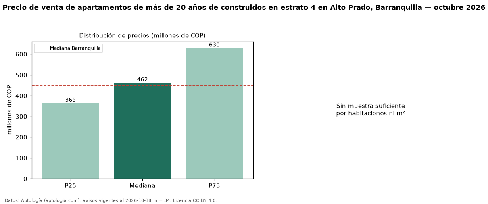

Precio de venta de apartamentos de más de 20 años de construidos en estrato 4 en Alto Prado, Barranquilla — octubre 2026
COP 462 millones es el precio mediano de apartamentos de más de 20 años de construidos en estrato 4 en venta en Alto Prado, Barranquilla (n = 34 avisos). Frente a la mediana de los apartamentos en estrato 4 en venta de Alto Prado (COP 500 millones, n = 47), queda 7 % por debajo; este segmento reúne el 72 % de esos avisos. El área mediana anunciada es 135 m². El segmento con más oferta es el de 3 o más habitaciones (29 avisos, mediana COP 520 millones). La administración mediana declarada es COP 540.000 al mes (n = 28). La mitad central de los avisos va de COP 365 millones a COP 630 millones (razón 1,7), una dispersión moderada. La mediana de todos los apartamentos en venta de Barranquilla es COP 450 millones (+3 % de diferencia). Datos: Aptología (aptologia.com), CC BY 4.0 — https://www.aptologia.com/venta/barranquilla/alto-prado. Archivos: PDF, CSV con las cifras y gráfica PNG.

| Avisos únicos | 34 |
|---|---|
| Percentil 25 | COP 365.000.000 |
| Mediana | COP 462.500.000 |
| Percentil 75 | COP 630.000.000 |
Fuente: avisos vigentes de portales inmobiliarios recopilados por Aptología, deduplicados (mínimo 30 avisos únicos por celda). Precios pedidos, no cerrados. Fecha: 2026-10-18.